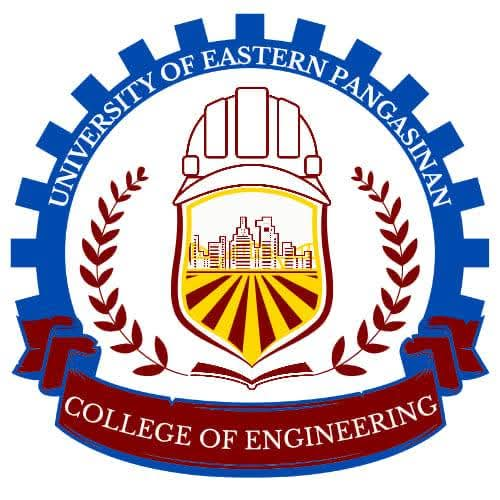
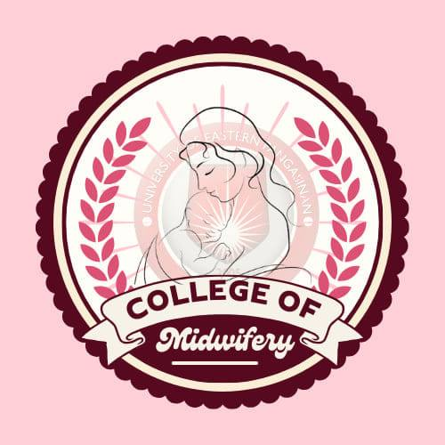
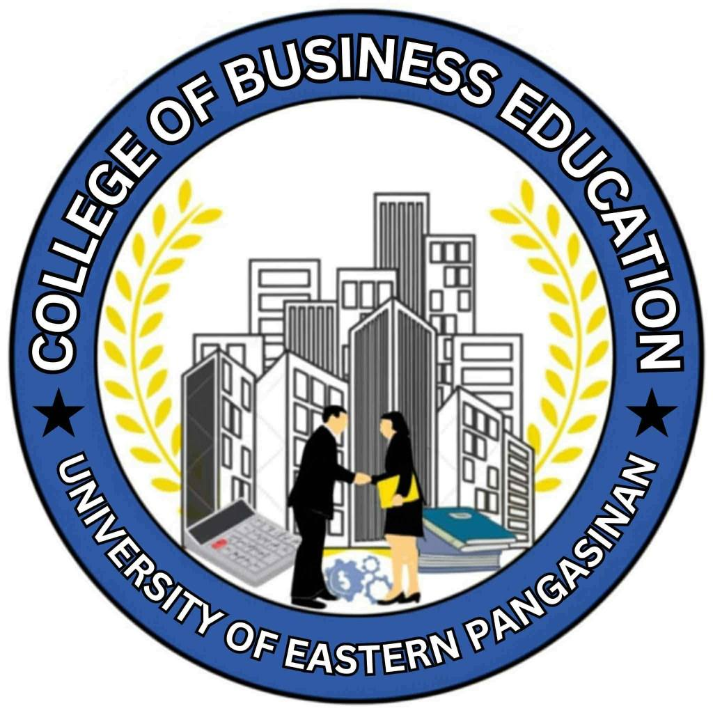
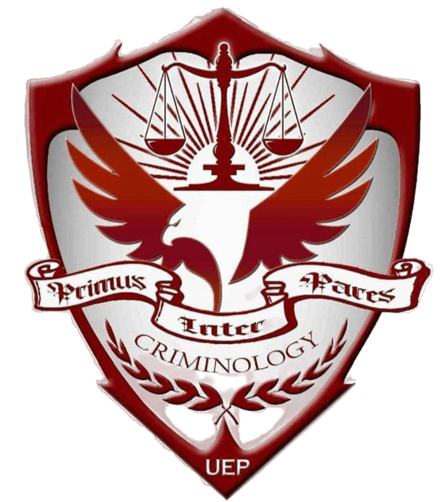
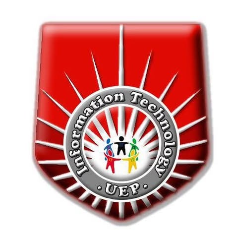
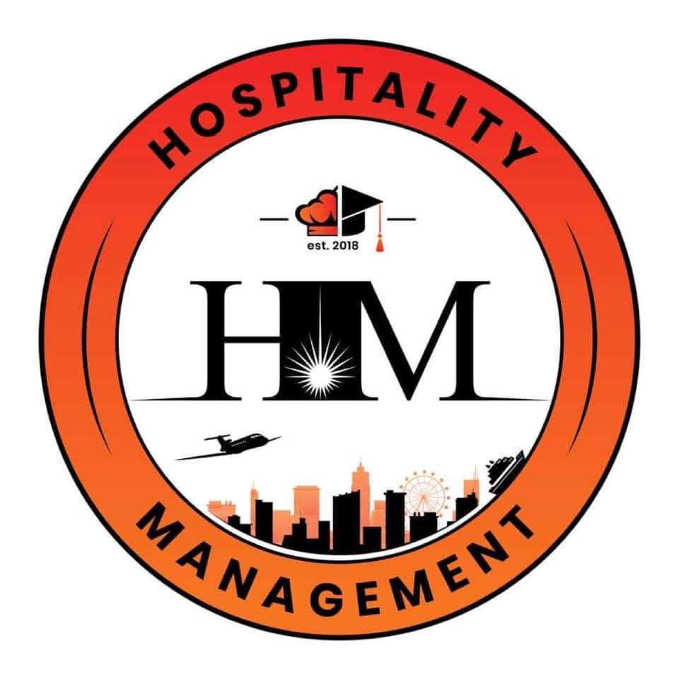
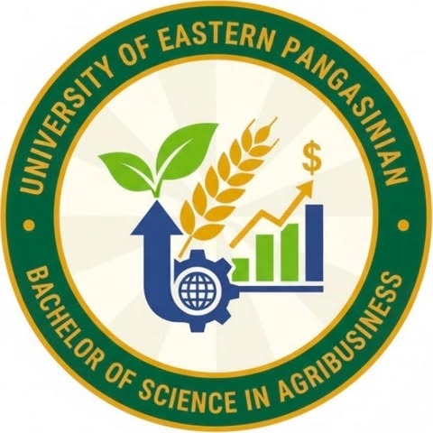
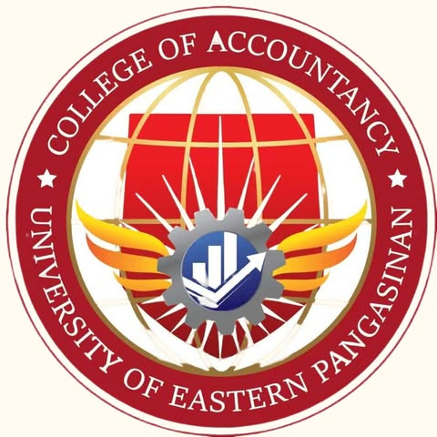

The College of Civil Engineering is committed to producing highly competent, innovative, and socially responsible engineers who are equipped to design, construct, and maintain the infrastructure that shapes our society. Rooted in the philosophy of "Building the Future with Integrity," the college strives to uphold excellence in education, research, and practice. We envision graduates who are not only technically proficient in the principles of mathematics, science, and engineering but also possess strong ethical values, environmental awareness, and leadership skills. Through a dynamic curriculum and hands-on training, we aim to address the growing needs of the industry and contribute significantly to national development by creating sustainable solutions for transportation, water resources, structures, and urban planning. Our Goal To mold engineers who are builders of progress, guardians of safety, and partners in nation-building.

The College of Midwifery stands as a beacon of excellence in healthcare education. We are committed to nurturing skilled professionals who specialize in the care of women during pregnancy, childbirth, and the postpartum period. Our program integrates theoretical knowledge with clinical expertise, ensuring that students develop the competence, confidence, and compassion necessary to serve as primary healthcare providers. We are dedicated to upholding the dignity of the birthing process and empowering women, ultimately contributing to a healthier and stronger nation. Our Goal To mold midwives who are leaders in healthcare, advocates for safe motherhood, and partners in nation-building.

The Business Education program stands as a premier venue for developing future educators and business professionals. We are dedicated to nurturing students who possess a strong foundation in business management, office administration, and instructional competencies. Our program combines technical skills with teaching methodologies, ensuring that students are ready to pursue careers in the corporate world or excel as teachers and trainers. We are committed to producing graduates who are adaptable, ethical, and equipped with the knowledge to succeed in a globally competitive environment. Our Goal To mold business educators and industry leaders who are agents of change, innovation, and excellence.

The College of Criminology is dedicated to producing highly competent, disciplined, and morally upright professionals in the field of criminal justice and law enforcement. Rooted in the philosophy of "Knowledge, Skills, and Integrity," the college strives to uphold excellence in education, research, and community service. We envision graduates who are not only experts in criminal law, forensic science, and investigation techniques but also possess strong ethical values, physical fitness, and a deep sense of social responsibility. Through a rigorous curriculum and comprehensive training, we aim to mold individuals capable of maintaining peace and order, preventing crime, and administering justice effectively. We are committed to serving as partners in nation-building by safeguarding the safety and security of society. Our Goal To develop leaders in law enforcement and criminal justice who are defenders of peace, law, and order.

The College of Information Technology is dedicated to producing highly competent, innovative, and globally competitive IT professionals ready to lead in the digital age. Rooted in the philosophy of "Innovation, Technology, and Excellence," the college strives to provide quality education that bridges the gap between theoretical knowledge and industry demands. We envision graduates who are not only technically proficient in programming, networking, database management, and system development but also possess strong analytical skills, ethical values, and adaptability to rapid technological changes. Through a dynamic curriculum, state-of-the-art facilities, and hands-on training, we aim to mold individuals capable of creating innovative solutions, managing information systems, and contributing significantly to the digital transformation and economic growth of the nation Our Goal To develop IT experts who are creators of technology, drivers of change, and leaders in the global digital community.

The College of Hospitality Management is dedicated to producing highly skilled, service-oriented, and globally competitive professionals ready to meet the demands of the dynamic hospitality and tourism industry. Rooted in the philosophy of "Service with Excellence and Heart," the college strives to provide quality education that blends theoretical knowledge with practical competence. We envision graduates who are not only experts in hotel operations, food and beverage management, and tourism services but also possess strong values, cultural sensitivity, and leadership qualities. Through a comprehensive curriculum, industry immersion, and state-of-the-art facilities, we aim to mold individuals who can adapt to diverse environments, uphold ethical standards, and contribute significantly to the growth of the local and international service sectors. Our Goal To develop leaders in hospitality who are passionate about service, innovation, and sustainable development.

The College of Agri-Business is dedicated to producing highly competent, innovative, and entrepreneurial professionals who bridge the gap between agriculture and business management. Rooted in the philosophy of "Profitability through Sustainability," the college strives to uphold excellence in agribusiness education, research, and industry practice. We envision graduates who are not only knowledgeable in agricultural production, marketing, finance, and supply chain management but also possess strong leadership skills and a deep appreciation for rural development. Through a dynamic curriculum and hands-on training, we aim to mold individuals capable of modernizing the agricultural sector, creating viable business opportunities, and ensuring food security while contributing significantly to national economic growth Our Goal To develop agribusiness leaders who cultivate innovation, harvest success, and sustain the future.

The College of Accountancy is dedicated to producing highly competent, ethical, and globally competitive professionals in the fields of accountancy, finance, and business management. Rooted in the philosophy of "Integrity, Accuracy, and Excellence," the college strives to uphold the highest standards of accounting education, research, and practice. We envision graduates who are not only experts in financial reporting, auditing, taxation, and management advisory services but also possess strong moral character, analytical skills, and a deep commitment to professional ethics. Through a rigorous curriculum and comprehensive training, we aim to mold individuals capable of making sound financial decisions, ensuring organizational success, and contributing significantly to economic development and good governance. Our Goal To develop business leaders and certified public accountants who serve as guardians of public trust and pillars of the economy.